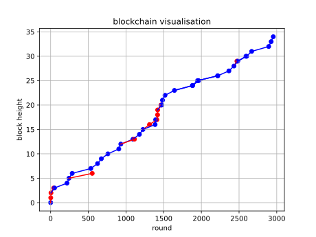
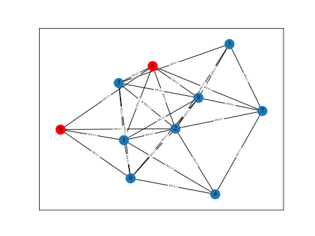
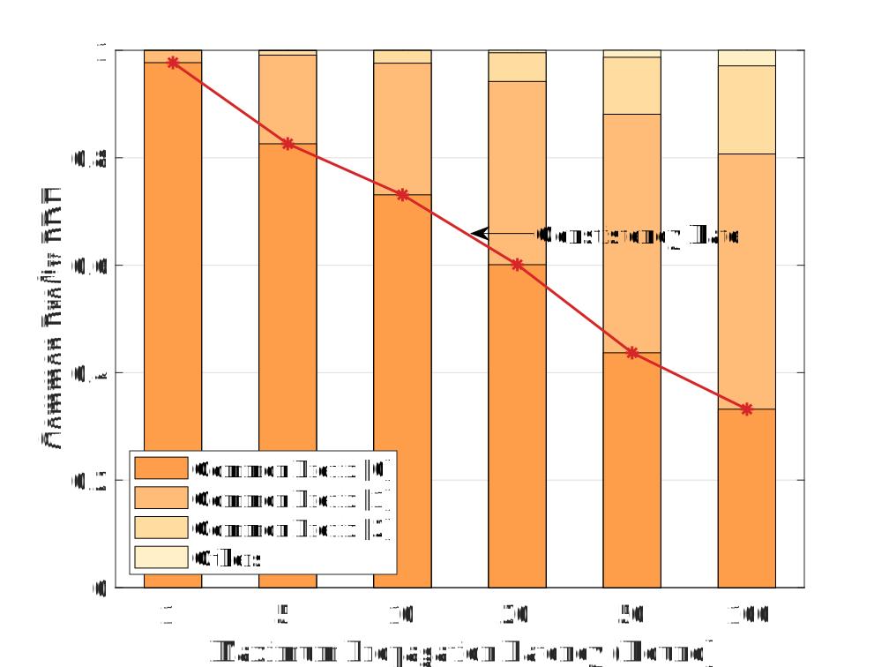
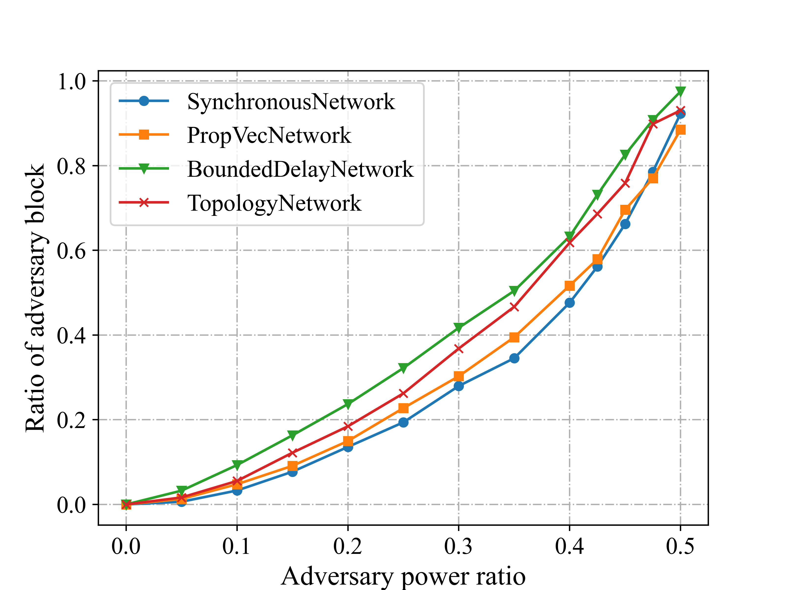
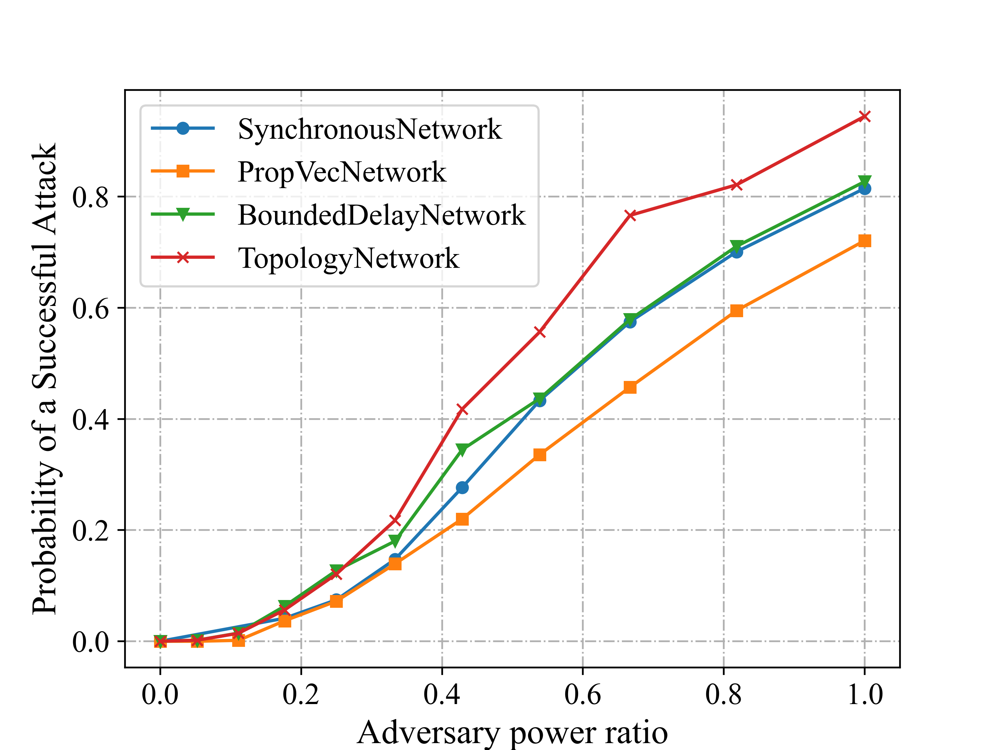
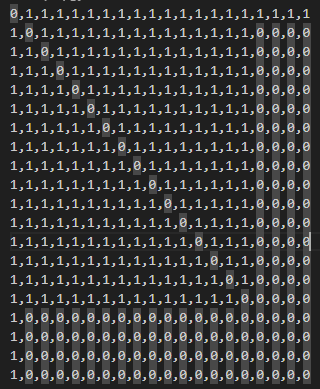

ChainXim 用户指南 User Guide
简介 Introduction
ChainXim是一款由XinLab开发的区块链仿真器，用于对不同参数设置下的区块链系统进行仿真验证。我们希望ChainXim能够兼容不同的共识协议、网络模型，并可以设计不同的攻击者，从多个维度全方位评估区块链的安全、吞吐等性能指标。
ChainXim is a blockchain simulator developed by XinLab to simulate and verify blockchain systems under different parameter settings. We hope that ChainXim can be compatible with different consensus protocols, network models, and can design different attackers to comprehensively evaluate the blockchain's security, throughput, and other performance metrics.
Quick Start
下载 Download
代码仓库地址：https://github.com/XinLab-SEU/ChainXim
可以下载ChainXim的压缩包后解压，或者克隆位于Gitee上的软件仓库
可在ChainXim的代码仓库下载master分支的压缩包：master.zip
git克隆命令：git clone https://github.com/XinLab-SEU/ChainXim.git
文件结构 File Structure
压缩包解压后或软件仓库克隆后的文件结构如下：
chain-xim
├── Attack.py
├── Environment.py
├── README.md
├── data
│ ├── __init__.py
│ ├── block.py
│ ├── chain.py
│ └── message.py
├── consensus
│ ├── __init__.py
│ ├── consensus_abc.py
│ └── pow.py
├── errors.py
├── external.py
├── functions.py
├── global_var.py
├── main.py
├── miner
│ ├── __init__.py
│ ├── _consts.py
│ ├── miner.py.py
│ ├── network_interface
│ ├── nic_abc.py
│ ├── nic_with_tp.py
│ └── nic_without_tp.py
├── network
│ ├── __init__.py
│ ├── adhoc.py
│ ├── deterprop.py
│ ├── network_abc.py
│ ├── stochprop.py
│ ├── synchronous.py
│ ├── topology.py
│ ├── topolpgy.csv
│ ├── topolpgy_coo.csv
│ └── topology_eclipse_sample.csv
└── system_config.ini
| 文件或目录 | 功能描述 |
|---|---|
| main.py | 仿真器主程序 |
| system_config.ini | 配置文件 |
| README.md | 用户文档 |
| Environment.py | 环境类与相关函数 |
| miner/ | 存放矿工类与网络接口 |
| data/ | 存放Mesage、BlockHead、Block、Chain类与相关函数 |
| consensus/ | 存放抽象共识类、PoW类与相关函数的目录 |
| network/ | 存放多种网络类的目录 |
| Attack.py | 攻击者类与相关函数 |
| functions.py | 包含计算哈希（SHA256）在内的一些函数 |
| external.py | 一些用于统计区块链指标的外部函数 |
| errors.py | 错误类，用于在仿真器中抛出错误 |
| global_var.py | 存放全局变量 |
配置环境 Configuration
- 安装Anaconda。Anaconda下载链接
- 从开始菜单打开Anaconda Prompt。
- 生成一个conda环境并激活，Python版本选择3.10。
conda create -n chainxim python=3.10 python-graphviz activate chainxim - 在ChainXim的根目录下通过pip安装所需要的包。
cd <project_directory> pip install -r requirements.txt
简单运行 Simple Startup
- 从开始菜单打开Anaconda Prompt，运行前需要激活conda环境。
activate chainxim - 在ChainXim的根目录下运行主程序。
cd <project_directory> python main.py
测试用例 Test Examples
将以下参数传递给主程序，将会使ChainXim随机生成一个包含10个节点的矿工网络，其中2个节点为攻击者，采用的网络模型为TopologyNetwork，仿真总共持续3000轮次。
python main.py --total_round 3000 --miner_num 10 -t 2 --network_type network.TopologyNetwork --no_compact_outputfile --save_routing_graph --show_label
Network Attributes
miner_num: 10
Generate Approach: rand
Generate Edge Probability: 0.8
Diameter: 2
Average Shortest Path Length: 1.356
Degree Histogram: [0, 0, 0, 0, 3, 1, 3, 2, 0, 1]
Average Degree: 5.8
Average Cluster Coefficient: 0.689
Degree Assortativity: -0.251
Parameters:
Miner Number: 10
Adversary Miners: [8, 6]
Consensus Protocol: PoW
Network Type: TopologyNetwork
Network Param: {'show_label': True, 'save_routing_graph': True, 'ave_degree': 8.0, 'bandwidth_honest': 0.5, 'bandwidth_adv': 5.0, 'TTL': 500, 'gen_net_approach': 'rand', 'block_prop_times_statistic': [0.1, 0.2, 0.4, 0.5, 0.6, 0.7, 0.8, 0.9, 1.0]}
Consensus Param: {'target': '000FFFFFFFFFFFFFFFFFFFFFFFFFFFFFFFFFFFFFFFFFFFFFFFFFFFFFFFFFFFFF', 'q_ave': 5, 'q_distr': 'equal'}
Attack Execute Type: execute_sample1

此外，仿真过程中产生的各类数据将保存在Results文件夹，包括每个矿工的区块链记录、区块链可视化矢量图、区块链攻击者日志、路由历史、网络拓扑图、区块传播示意图等。注意如果缺失命令行参数--no_compact_outputfile --save_routing_graph，部分文件可能缺失。
区块链可视化矢量图（blockchain_visualization/Blockchain Structure.gv.svg）

图中红色区块由攻击者产生，蓝色区块由诚实矿工产生。
区块链可视化图（blockchain visualisation.svg）
{kind=link}

图中每个点代表一个区块，蓝点代表诚实矿工产生的区块，红点代表攻击者产生的区块。每个点的横坐标表示区块产生的轮次，纵坐标表示区块所在高度。注意，如果运行轮数过多，产生的区块数过多，会导致生成的图片挤成一团，难以分辨
区块产生时间分布直方图（block interval distribution.svg）

网络拓扑图（Network Results/network topology.svg）
{kind=link}

图中相邻节点之间标记了传输带宽，单位为MB/round。
区块传播示意图（以区块B2为例：Network Results/routing_graphB2.svg）

上图展示了区块B2从节点6传播到整个网络的全过程，图中每个实心箭头都带有含两对正数的标记，第一对标识某一传播过程源矿工与目标矿工的ID，第二对标识某一传播过程的起始轮次与结束轮次。
仿真器输入参数 Input
仿真器的输入参数可以通过两种方式指定：命令行以及配置文件。一般情况下可以修改ChainXim附带的配置文件system_config.ini以改变仿真参数，也可以通过命令行指定个别仿真参数。命令行支持的参数少于配置文件，但是一旦被指定，优先级高于配置文件，可以通过python main.py --help命令查看命令行帮助信息。
EnvironmentSettings
配置仿真环境
| system_config | 命令行示例 | 类型 | 说明 |
|---|---|---|---|
| total_round | --total_round 50 |
int | 仿真总轮次数 |
| process_bar_type | --process_bar_type round |
str | 进度条显示风格（round或height） |
| miner_num | --miner_num 80 |
int | 网络中的矿工总数 |
| blocksize | --blocksize 8 |
float | 区块大小，单位MB |
| consensus_type | --consensus_type consensus.PoW |
str | 共识类型，目前仅consensus.PoW可选 |
| network_type | --network_type network.SynchronousNetwork |
str | 网络类型，network.SynchronousNetwork、network.PropVecNetwork、network.BoundedDelayNetwork、network.TopologyNetwork四选一 |
| show_fig | --show_fig |
bool | 是否显示仿真过程中的图像 |
| compact_outputfile | --no_compact_outputfile |
bool | 是否简化log和result输出以节省磁盘空间 通过 --no_compact_outputfile设置为False |
ConsensusSettings
配置共识协议参数
| system_config | 命令行示例 | 类型 | 说明 |
|---|---|---|---|
| q_ave | --q_ave 5 |
int | 单个矿工的平均哈希率，即每轮能计算哈希的次数 |
| q_distr | --q_distr equal |
str | 哈希率的分布模式 equal：所有矿工哈希率相同； rand：哈希率满足高斯分布 |
| target | 无 | str | 16进制格式的PoW目标值 |
| 无 | --difficulty 12 |
int | 用二进制PoW目标值前缀零的长度表示的PoW难度， 在主程序转换为PoW目标值 |
AttackModeSettings
配置攻击模式参数
| system_config | 命令行示例 | 类型 | 说明 |
|---|---|---|---|
| t | -t 0 |
int | 攻击者总数 |
| adversary_ids | 无 | tuple[int] | 攻击者id e.g.(1,3,5) |
| attack_execute_type | --attack_execute_type execute_sample1 |
str | 攻击类型 execute_sample0：算力攻击； execute_sample1：自私挖矿 |
DeterPropNetworkSettings
配置DeterPropNetwork参数
| system_config | 类型 | 说明 |
|---|---|---|
| prop_vector | list[float] | 传播向量（以列表形式）e.g.[0.1, 0.2, 0.4, 0.6, 1.0]其中的元素代表了当(1,2,3...)轮过后接收到消息的矿工比例，最后一个元素必须为1.0 |
StochPropNetworkSettings
配置StochPropNetwork参数
| system_config | 命令行示例 | 类型 | 说明 |
|---|---|---|---|
| rcvprob_start | --rcvprob_start 0.001 |
float | 消息的初始接收概率 |
| rcvprob_inc | --rcvprob_inc 0.001 |
float | 每轮增加的消息接收概率 |
| block_prop_times_statistic | 无 | list[float] | 需统计的区块传播时间对应的接收矿工比例 |
TopologyNetworkSettings
配置TopologyNetwork参数
| system_config | 命令行示例 | 类型 | 说明 |
|---|---|---|---|
| init_mode | --init_mode rand |
str | 网络初始化方法, 'adj'邻接矩阵, 'coo'稀疏的邻接矩阵, 'rand'随机生成。'adj'和'coo'的网络拓扑通过csv文件给定。'rand'需要指定带宽、度等参数 |
| bandwidth_honest | --bandwidth_honest 0.5 |
float | 诚实矿工之间以及诚实矿工和攻击者之间的网络带宽，单位MB/round |
| bandwidth_adv | --bandwidth_adv 5 |
float | 攻击者之间的带宽，单位MB/round |
| rand_mode | --rand_mode homogeneous |
str | 随机网络拓扑的生成模式 'homogeneous'：根据ave_degree生成网络并尽可能保持每个节点的度相同 'binomial'：采用Erdős-Rényi算法，以 ave_degree/(miner_num-1)概率在节点之间随机建立链接 |
| ave_degree | --ave_degree 8 |
float | 网络生成方式为'rand'时，设置拓扑平均度 |
| stat_prop_times | 无 | list[float] | 需统计的区块传播时间对应的接收矿工比例 |
| outage_prob | --outage_prob 0.1 |
float | 每条链路每轮的中断概率，链路中断后消息将在下一轮重发 |
| dynamic | --dynamic |
bool | 是否使网络动态变化，如果动态变化，会以一定概率添加或者删除节点之间的链接 |
| avg_tp_change_interval | 无 | float | dynamic=true时，设置拓扑变化的平均轮次 |
| edge_remove_prob | 无 | float | dynamic=true时，设置拓扑变化时，已存在的每条边移除的概率 |
| edge_add_prob | 无 | float | dynamic=true时，设置拓扑变化时，未存在的条边新建立连接的概率 |
| max_allowed_partitions | 无 | int | dynamic=true时,设置拓扑变化时，最大可存在的分区数量 |
| save_routing_graph | --save_routing_graph |
bool | 是否保存各消息的路由传播图，建议网络规模较大时关闭 |
| show_label | --show_label |
bool | 是否显示拓扑图或路由传播图上的标签，建议网络规模较大时关闭 |
AdHocNetworkSettings
配置AdHocNetwork参数
| system_config | 命令行示例 | 类型 | 说明 |
|---|---|---|---|
| init_mode | --init_mode rand |
str | 网络初始化方法, 'adj'邻接矩阵, 'coo'稀疏的邻接矩阵, 'rand'随机生成。'adj'和'coo'的网络拓扑通过csv文件给定。'rand'需要指定带宽、度等参数 |
| ave_degree | --ave_degree 3 |
float | 网络生成方式为'rand'时，设置拓扑平均度 |
| segment_size | --ave_degree 8 |
float | 消息分段大小 ；将完整消息分若干段，每段消息传播时间为一轮 |
| region_width | --region_width 100 |
float | 正方形区域的宽度，节点在该区域中进行高斯随机游走 |
| comm_range | --comm_range 30 |
float | 节点通信距离，在通信距离内的两节点自动建立连接 |
| move_variance | --move_variance 5 |
float | 节点进行高斯随机游走时，指定xy坐标移动距离的方差 |
| outage_prob | --outage_prob 0.1 |
float | 每条链路每轮的中断概率，链路中断后消息将在下一轮重发 |
| stat_prop_times | 无 | list[float] | 需统计的区块传播时间对应的接收矿工比例 |
仿真器输出 Output
仿真结束后会在终端打印仿真过程中全局链的统计数据。例：
162 blocks are generated in 26682 rounds, in which 61 are stale blocks.
Average chain growth in honest miners' chain: 100.013
Number of Forks: 54
Fork rate: 0.53465347
Stale rate: 0.37654321
Average block time (main chain): 264.17821782 rounds/block
Block throughput (main chain): 0.00378532 blocks/round
Throughput in MB (main chain): 0.12113035 MB/round
Average block time (total): 164.7037037 rounds/block
Block throughput (total): 0.00607151 blocks/round
Throughput in MB (total): 0.19428828 MB/round
Chain_Quality Property: {'Honest Block': 102, 'Adversary Block': 0}
Ratio of blocks contributed by malicious players: 0.0
Upper Bound t/(n-t): 0.0
Block propagation times: {0.1: 60.553, 0.2: 77.534, 0.4: 105.994, 0.5: 109.826, 0.6: 113.23, 0.7: 116.522, 0.8: 120.658, 0.9: 126.447, 1.0: 148.327}
终端显示的仿真结果含义如下：
| 输出项目 | 解释 |
|---|---|
| Number of stale blocks | 孤立区块数（不在主链中的区块数） |
| Average chain growth in honest miners' chain | 诚实节点平均链长增长 |
| Number of Forks | 分叉数目（只算主链） |
| Fork rate | 分叉率=主链上有分叉的高度数/主链高度 |
| Stale rate | 孤块率=孤块数/区块总数 |
| Average block time (main chain) | 主链平均出块时间=总轮数/主链长度(轮/块) |
| Block throughput (main chain) | 主链区块吞吐量=主链长度/总轮数 |
| Throughput in MB (main chain) | 主链区块吞吐量*区块大小 |
| Average block time (total) | 总平均出块时间=总轮数/生成的区块总数 |
| Block throughput (total) | 总区块吞吐量=生成的区块总数/总轮数 |
| Throughput in MB (total) | =总区块吞吐量*区块大小 |
| common prefix pdf | 统计共同前缀得到的pdf（统计每轮结束时，所有诚实节点的链的共同前缀与最长链长度的差值得到的概率密度分布） |
| Consistency rate | 一致性指标=common_prefix_pdf[0] |
| Chain_Quality Property | 诚实矿工和恶意矿工的出块总数 |
| Ratio of blocks contributed by malicious players | 恶意节点出块比例 |
| Upper Bound t/(n-t) | 恶意节点出块占比的上界(n为矿工总数，t为恶意矿工数目) |
| Block propagation times | 区块传播时间（分布） |
仿真过程中结果、日志、图像都保存在Results/\<date-time>/目录下，date-time是仿真开始的日期时间。该目录的典型文件结构：
Results/20230819-232107/
├── Attack_log.txt
├── Attack_result.txt
├── Chain Data
│ ├── chain_data.txt
│ ├── chain_data0.txt
│ ├── chain_data1.txt
│ ├── ......
├── Network Results
│ ├── ......
├── block interval distribution.svg
├── blockchain visualisation.svg
├── blockchain_visualization
│ ├── Blockchain Structure.gv
│ └── Blockchain Structure.gv.svg
├── evaluation results.txt
├── events.log
└── parameters.txt
输出的仿真结果文件含义如下：
| 文件或目录 | 功能描述 |
|---|---|
| Attack_log.txt | 攻击日志 |
| Attack_result.txt | 攻击结果 |
| Chain Data/ | 全局链和各矿工本地链的完整数据 |
| Network Results/ | 网络传输结果，如传播过程（各矿工何时收到某区块）及网络拓扑、路由过程图等 |
| block interval distribution.svg | 区块时间分布 |
| blockchain visualisation.svg | 区块链可视化 |
| blockchain_visualization/ | 借助Graphviz的区块链可视化 |
| evaluation results.txt | 评估结果 |
| events.log | 仿真过程日志，记录重要事件如产生区块、接入网络等 |
| parameters.txt | 仿真环境参数 |
仿真实例 Simulation Examples
同步网络中矿工数量与出块时间的关系
同步网络 横坐标矿工数目 纵坐标出块时间
参数设置如下：
-
仿真次数：200000轮*1次
-
矿工数：10-80
-
共识类型：PoW
-
难度：0000FF...
-
q_ave = 10
-
网络参数：SynchronousNetwork

双花攻击成功率
参数设置如下：
-
仿真次数：1200000轮*1次
-
矿工数：40
-
共识类型：PoW
-
难度：000FFF...
-
q_ave = 1
-
网络参数：四种网络参数均为默认

进阶性能展示
不同网络最大时延下的分叉率、孤块率、吞吐量与一致性
-
轮数：100000
-
矿工数：100
-
共识类型：PoW
-
q_ave:10
-
难度：0002FF...
-
网络类型：SynchronousNetwork和BoundedDelayNetwork
-
网络参数：rcvprob_start=rcvprob_inc=1/最大轮数
分叉率/孤块率与吞吐量随最大传播时延的变化示意图

一致性指标随最大传播时延的变化示意图

图中，Common Prefix[0]、[1]、[2]分别代表共同前缀PDF的前三个分量,其中序数代表共同前缀与主链长度的差值（详见“仿真器输出”一节）。
拓扑网络下区块链的共同前缀性质
- 轮数：16189
- 矿工数：10
- 共识类型：PoW
- 难度：000FFF...
- 网络类型：TopologyNetwork
- 网络参数：gen_net_approach=adj；gen_net_approach=adj；bandwidth_honest=0.5
每轮结束时，所有节点的本地链相对共同前缀的高度差以及其对Common Prefix PDF的影响如下图所示。下方时间轴是发生链尾切换事件的轮次，上x轴是区块高度/common prefix后的区块长度（suffix length），y轴是矿工ID。图中的热度值指代的是每个矿工本地链链尾与共同前缀的距离达到Suffix Length的累积次数。图中BXX指代区块编号，代表矿工在当前轮次本地链链尾的状态，下x轴指代这些区块所在的高度。点击Play开始播放动画，可以观察到区块在共同前缀的下一高度产生，然后扩散到其他矿工，最后导致共同前缀高度+1。
不同区块大小下的分叉率、孤块率、吞吐量与一致性
- 轮数：500000
- 曲线上单点重复次数：5
- 矿工数：20
- 共识类型：PoW
- 难度：0000FF...
- 网络类型：TopologyNetwork
- 网络参数：TTL=500；gen_net_approach=rand；ave_degree=8；bandwidth_honest=0.5; bandwidth_adv=5；block_prop_times_statistic=[0.1, 0.2, 0.4, 0.5, 0.6, 0.7, 0.8, 0.9, 1.0]
分叉率/孤块率与吞吐量随区块大小的变化示意图

一致性指标随区块大小的变化示意图

图中，Common Prefix[0]、[1]、[2]分别代表共同前缀PDF的前三个分量，其中序数代表共同前缀与主链长度的差值（详见“仿真器输出”一节）。
传播时延随区块大小的变化
-
轮数：100000
-
矿工数：100
- 共识类型：PoW
- q_ave:10
- 难度：00008F...
- 网络类型：TopologyNetwork
- 网络参数：TTL=500；gen_net_approach=rand；ave_degree=8；bandwidth_honest=0.5; bandwidth_adv=5；block_prop_times_statistic=[0.1, 0.2, 0.4, 0.5, 0.6, 0.7, 0.8, 0.9, 1.0]
传播时延与90%有效吞吐量随区块大小的变化示意图

注：X%有效吞吐量=区块大小/(X%区块传播时延)
不同攻击向量下的攻击者出块占比示意图
1. 算力攻击（honest mining）

四种不同网络对算力攻击的影响示意图
一次攻击成功的定义：攻击者产出区块，并被网络接受。
参数设置如下：
-
轮数：100000
-
曲线上单点重复次数：20
-
矿工数：40
-
共识类型：PoW
-
难度：000FFF...
-
q_ave = 1
-
网络参数：四种网络参数均为默认
2. 区块截留攻击（selfish mining）
四种不同网络对区块截留攻击的影响示意图

纵坐标为链质量指标，即最终攻击者产出区块在主链中的占比。
参数设置如下：
- 仿真次数：100000轮*20次
- 矿工数：40
- 共识类型：PoW
- 难度：000FFF...
- q_ave = 1
- 网络参数：四种网络参数均为默认
矿工不同择链策略对区块截留攻击的影响示意图

图中的理论区域由以下公式得到：
\(\alpha\)为攻击者算力占全网比例，\(0\leqslant\alpha\leqslant\frac{1}{2}\)。 \(\gamma\)为当网络中存在诚实链（最新的区块由诚实节点产出）与攻击链（从某一个区块开始到最新的区块均为攻击者产生）分叉时，选择在攻击链上继续挖矿的诚实矿工占其自身的比例，\(0\leqslant\gamma\leqslant1\)。 注：矿工择链策略为内部测试功能，暂未开放。但本仿真器遵循着\(\gamma=0\)的挖矿策略，即所有诚实节点默认在诚实链分支上继续挖矿。因此使用者可以利用以下理论曲线公式验证。
参数设置如下：
- 仿真次数：100000轮*20次
- 矿工数：40
- 共识类型：PoW
- 难度：000FFF...
- q_ave = 1
- 网络类型：SynchronousNetwork
3. 双花攻击（double spending）
不同网络对双花攻击的影响示意图

参数设置如下：
- 仿真次数：1200000轮*1次
- 矿工数：40
- 共识类型：PoW
- 难度：000FFF...
- q_ave = 1
- 网络参数：四种网络参数均为默认
不同策略对双花攻击的影响与理论对比示意图

图中的理论曲线由以下公式得到：
\(N\)为攻击者等待确认区块的数量，即攻击者会等待诚实链高度增长\(N\)个区块后才会选择发布与否。 \(N_g\)表示当攻击者落后诚实链\(N_g\)个区块时放弃当前攻击。 \(\beta\)为攻击者与诚实矿工算力之比，\(0\leqslant\beta\leqslant1\)。
参数设置如下：
- 仿真次数：3000000轮*1次
- 矿工数：40
- 共识类型：PoW
- 难度：000FFF...
- q_ave = 1
- 网络类型：SynchronousNetwork
4. 日蚀攻击（eclipse attack）
受日蚀攻击影响下的双花攻击示意图

图中绿色曲线 Theory Shift 10% 为曲线 Theory向左平移一个单位得到。

参数设置如下：
- 仿真次数：3000000轮*1次
- 矿工数：20
- 共识类型：PoW
- 难度：000FFF...
- q_ave = 1
- 网络类型：TopologyNetwork
- 网络参数：图中的Full connect topolog、Random connect topolog、Eclipse 10% miners 以及 Eclipse 20% miners使用固定的邻接矩阵生成拓扑网络，其邻接矩阵分别为\(TP_F\)、\(TP_R\)、\(TP_1\)和\(TP_2\)，此外设置为默认
- \(TP_F\)矩阵为除对角线元素为0外均为1。
- \(TP_R\)矩阵为随机生成的拓扑网络。
- \(TP_1\)矩阵如图TP1（孤立节点为18，19）
- \(TP_2\)矩阵如图TP2（孤立节点为16，17，18，19）
TP1邻接矩阵：

TP2邻接矩阵：

注：在设置攻击者时请绕开孤立节点，手动设置。
开发者文档 Developer's Document
贡献者 Contributors
曹苇杭 Weihang Cao
- 主要负责整体框架，共识层、评估层的代码编写，统筹项目进度
陈炳文 Bingwen Chen
- 主要负责网络层部分的代码编写
陈阳 Yang Chen
- 主要负责攻击者部分的代码编写
崔自翔 Zixiang Cui
- 主要负责对共识层和基础框架进行优化
陈喜年 Xinian Chen
- 主要负责仿真器的测试与优化
凌昕彤 Xintong Ling
- 指导老师